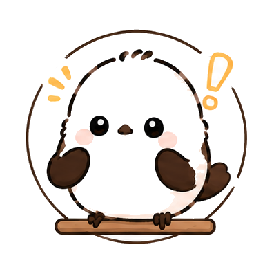

HOME
←
→
KATAKANA · 01
TABELLA BASE
I 46 segni base hanno gli stessi suoni dell’hiragana.
Tabella gojūon
| a | i | u | e | o |
|---|---|---|---|---|
| ア a | イ i | ウ u | エ e | オ o |
| カ ka | キ ki | ク ku | ケ ke | コ ko |
| サ sa | シ shi | ス su | セ se | ソ so |
| タ ta | チ chi | ツ tsu | テ te | ト to |
| ナ na | ニ ni | ヌ nu | ネ ne | ノ no |
| ハ ha | ヒ hi | フ fu | ヘ he | ホ ho |
| マ ma | ミ mi | ム mu | メ me | モ mo |
| ヤ ya | ユ yu | ヨ yo | ||
| ラ ra | リ ri | ル ru | レ re | ロ ro |
| ワ wa | ヲ wo / o | |||
| ン n |
NOTE
ATTENZIONI
Segni simili
シ / ツshi / tsu — attenzione alla direzione dei tratti
ソ / ンso / n — molto simili
ク / ケku / ke
